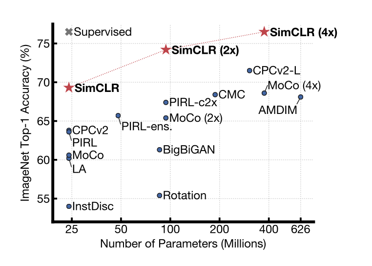
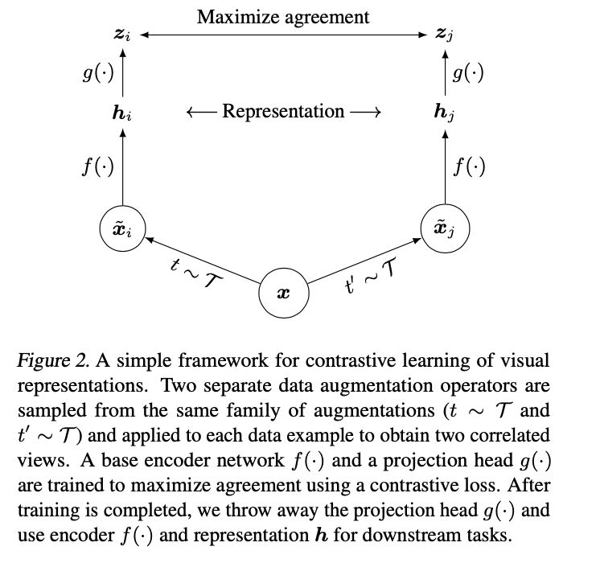
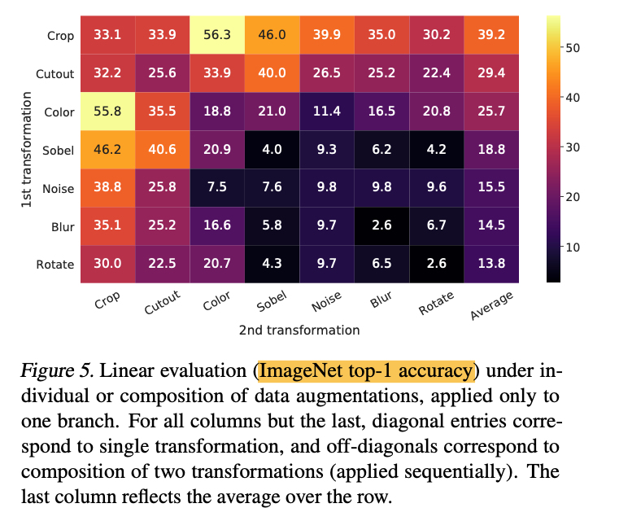

1. Read the title and make an opinion of what’s in the paper (e.g., the area, the task)
A Simple Framework for Contrastive Learning of Visual Representations
A couple of thoughts.
- I wonder how much of this is an actual framework of code, or just ideas.
- Contrastive Learning, so I’m expecting semi-supervised learning
- Visual Representations: not sure why they didn’t just say images? Is there more to visual representations than images?
2. Read the abstract well and form a hypothesis of
- What’s new in the paper?
- Do you have a clear overview about what the paper is all about?
We simplify recently proposed contrastive self-supervised learning algorithms without requiring specialized architectures or a memory bank.
The novel approach seems to be a simplification of other contrastive literature.
In order to understand what enables the contrastive prediction tasks to learn useful representations, we systematically study the major components of our framework.
Citing three discoveries:
- composition of data augmentations plays a critical role in defining effective predictive tasks,
- introducing a learnable nonlinear transformation between the representation and the contrastive loss substantially improves the quality of the learned representations, and
- contrastive learning benefits from larger batch sizes and more training steps compared to supervised learning.
Number three is an iteresting discovery, while two I haven’t quite wrapped my head around, and one seems obvious, but I hope they can provide some compelling data for it.
By combining these findings, we are able to considerably outperform previous methods for self-supervised and semi-supervised learning on ImageNet.
It seems to be a leap forward in performance, but still does not appear to be better than supervised, which opens interesting possibilities.

They state parity with top-1 accuracy as ResNet-50 (which is decent I’d say) and competes with Alexnet against 1/100th of the labels. Although the results are not ground-breaking, it does seem to be promising.
I’d say from the abstract, their actual framework is not obvious. They mostly presented results, so I need to figure out what exactly they do for that.
3. Look at the images and extract a set of “questions” about what is not clear about their method from the images. Now your job is to answer these questions by reading the paper.

So it actually does look like a fairly simple framework, and looks to clearly depend on having well-engineered augmentations (however for some vision tasks, these may already have been done).
A couple of images are used to describe the augmentations. It seems like much of this paper will be understanding augmentations.
4. Read the method aiming to answer your “questions” about the paper. Focus on understanding only the things relevant for the story (i.e., to understand the contribution).
To see their method it is in short:
SimCLR learns representations by maximizing agreement between differently augmented views of the same data example via contrastive loss in the latent space.
This is a simple explanation of their idea. This provokes me to the question, what if the augmentation is not from a augmentation function but from the simultaneous recordings of the same data with different devices (ie two pictures taken at the same time with different cameras of the same dog). It may only complicate the task, or it may provide more stimulating learning tasks.
There are four pieces to the framework:
- Data Augmentation Module: this is an important function considering so much of the paper is devoted to augmentation. This module from the framework does as follows:
transforms any given data example randomly resulting in two correlated views of the same example, denoted and , which we consider as a positive pair. In this work, we sequentially apply three simple augmentations: random cropping followed by resize back to the original size, random color distortions, and random Gaussian blur.
- Base Encoder which is ResNet
- Projection Head which is a 2 layer MLP
- Contrastive Loss Function for this I’m still confused because they say they don’t explicitly sample negative examples, but treat the other 2(N-1) examples in minibatch as negative examples. Hopefully I can clear this up. They term the loss as NT-Xent (the normalized temperature-scaled cross entropy loss).
Essential Color Change
color histograms alone suffice to distinguish images. Neural nets may exploit this shortcut to solve the predictive task. There- fore, it is critical to compose cropping with color distortion in order to learn generalizable features.
This is a good find.
There are many more results they include I do not go into. The paper is well written with a lot in it.
5. Read the experiments to convince you that the show results are caused by their claim. Be aware that the experiments highlighted are the best scenarios and are fully hyper-parameter tuned.
This image I found to be very interesting, where they show their results with using a single, double data augmentation. Metric is ImageNet top-1 accuracy:

There were many experiments, so I haven’t covered all of them. They essentially all point to the expected results:
- More data is needed
- Self supervised learning is able to leverage bigger models (4x ResNet)
- Less labels can be used
- Not yet as good as supervised learning if enough labels, but getting close.
- Augmentation choices make significant differences.
6. Make sure you answered all your questions. Did the authors convince you that their story has the effect that they claim?
They conclude with:
The strength of this simple framework suggests that, despite a recent surge in interest, self-supervised learning remains undervalued.
I don’t know if I agree with that, but I think this paper was written in 2019, and times change. I still need to spend more time understanding the actual implementation of the loss function and how they get negative samples, that is by biggest misunderstanding yet. However, I see the value of low-label regimes that have tasks were unsupervised data is easy to come by.